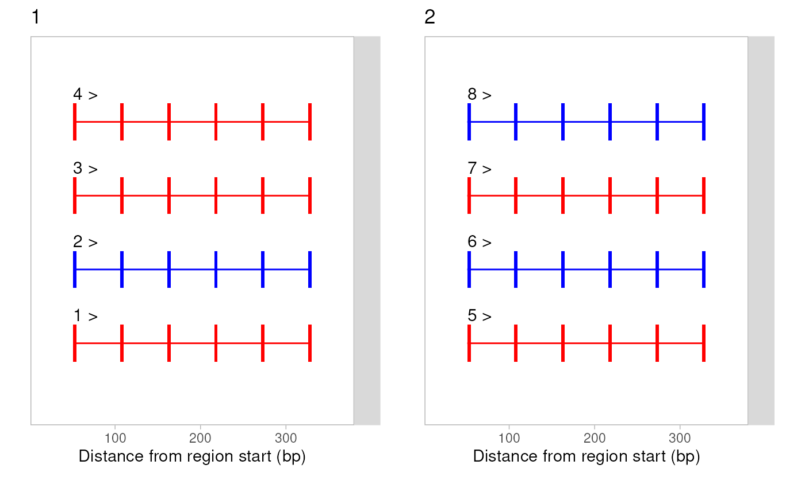
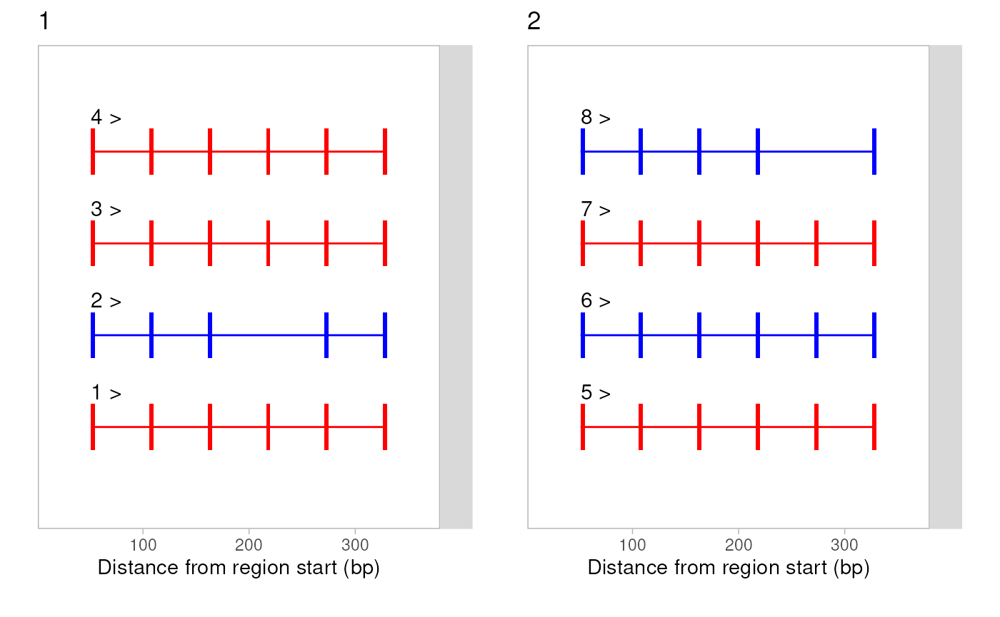

Introduction to `splicelogic`
Beatriz Campillo
Michael I. Love
02/18/2026
Source:vignettes/splicelogic.Rmd
splicelogic.RmdIntroduction
splicelogic is an R/Bioconductor package for detecting
alternative splicing events from exon-level data stored as
GRanges objects. Given a set of exons annotated with a
coefficient column indicating differential transcript usage (positDTU),
splicelogic identifies the following types of splicing
events:
- Skipped exons (SE) – exons present in one isoform but absent in another.
- Mutually exclusive exons (MXE) – pairs of exons where one is included at the expense of the other.
- Retained introns (RI) – intronic regions that are retained as part of an exon in an alternative isoform.
- Alternative 3’ (A3SS) – exons that share the same 5’ splice site but differ at the 3’ end.
- Alternative 5’ (A5SS) – exons that share the same 3’ splice site but differ at the 5’ end.
Input format
splicelogic operates on GRanges objects
that contain exon-level annotations. Each range represents one exon and
must carry the following metadata columns:
| Column | Description |
|---|---|
gene_id |
Gene identifier |
tx_id |
Transcript identifier |
exon_rank |
Exon rank within the transcript |
| coef_col | DTU coefficient (column name is user-defined) |
The coefficient input in coef_col indicates the differential
transcript usage (DTU) of the specific transcript containing the exon.
All exons from the same transcript share the same coefficient value.
This values comes from a prior differential transcript usage analysis,
such as that performed by satuRn. Positive coefficient
values indicate upregulated exons and negative values indicate
downregulated exons.
How to start detecting splicing events
Preprocessing
We can create mock data for demonstration purposes using the
create_mock_data() function. This function generates a
GRanges object with the required metadata columns and
random coefficient values for each transcript, making sure that at least
one transcript is upregulated (coef>0) and one is downregulated
(coef<0) for each gene.
gr <- create_mock_data( n_genes = 2, n_tx = 4, n_exons = 6 )
mcols(gr)## DataFrame with 48 rows and 7 columns
## gene_id tx_id exon_rank coefs key nexons internal
## <integer> <numeric> <integer> <numeric> <character> <integer> <logical>
## 1 1 1 1 -0.235204 1-1 6 FALSE
## 2 1 1 2 -0.235204 1-2 6 TRUE
## 3 1 1 3 -0.235204 1-3 6 TRUE
## 4 1 1 4 -0.235204 1-4 6 TRUE
## 5 1 1 5 -0.235204 1-5 6 TRUE
## ... ... ... ... ... ... ... ...
## 44 2 8 2 0.465764 8-2 6 TRUE
## 45 2 8 3 0.465764 8-3 6 TRUE
## 46 2 8 4 0.465764 8-4 6 TRUE
## 47 2 8 5 0.465764 8-5 6 TRUE
## 48 2 8 6 0.465764 8-6 6 FALSE
#visualize the input data
slPltRanges(gr)
Skipped exons
calc_skipped_exons() identifies exons that are present
in downregulated transcripts but absent (skipped) in upregulated
ones.
Using the gr object generated by create_mock_data(), we
can generate skiped exon events with the
generate_skipped_exons() function, which modifies the input
GRanges object to include skipped exon events. Then we can
run the detection function calc_skipped_exons() on the
modified GRanges object:
gr_se <- generate_skipped_exons(gr, n_se = 2)
slPltRanges(gr_se)
gr_se <- preprocess_input(gr_se, coef_col = "coefs")
se_result <- calc_skipped_exons(gr_se, coef_col = "coefs")
se_result## GRanges object with 5 ranges and 10 metadata columns:
## seqnames ranges strand | gene_id tx_id exon_rank coefs
## <Rle> <IRanges> <Rle> | <integer> <numeric> <integer> <numeric>
## [1] chr13 31-35 + | 1 1 4 -0.235204
## [2] chr13 31-35 + | 1 3 4 -0.685583
## [3] chr13 31-35 + | 1 4 4 -0.985201
## [4] chr13 141-145 + | 2 5 5 -0.682818
## [5] chr13 141-145 + | 2 7 5 -0.420466
## key nexons internal n_txp event tx_event
## <character> <integer> <logical> <integer> <character> <numeric>
## [1] 1-4 6 TRUE 4 skipped_exon 2
## [2] 3-4 6 TRUE 4 skipped_exon 2
## [3] 4-4 6 TRUE 4 skipped_exon 2
## [4] 5-5 6 TRUE 4 skipped_exon 8
## [5] 7-5 6 TRUE 4 skipped_exon 8
## -------
## seqinfo: 1 sequence from an unspecified genome; no seqlengthsThe result is a GRanges object containing only the exons
flagged as skipped, with an event column set to
"skipped_exon". The "tx_id" refers to the
transcript that includes the skipped exon, "tx_event"
indicates the transcripts in respect to which the exon is skipped
(i.e. the downregulated transcripts that do not include the exon).
Mutually exclusive exons
calc_mutually_exclusive() detects pairs of exons where
one exon is included in one isoform and a different exon occupies the
equivalent position in another isoform.
The mx_mock_data() dataset is designed to contain
mutually exclusive exon events:
gr_mx <- mx_mock_data()
gr_mx <- preprocess_input(gr_mx, coef_col = "coefs")
mx_result <- calc_mutually_exclusive(gr_mx, coef_col = "coefs")
mx_resultRetained introns
calc_retained_introns() finds exons in upregulated
transcripts that overlap intronic regions of downregulated transcripts,
indicating intron retention.
gr_ri <- create_mock_data(3, 6, 3)
gr_ri <- preprocess_input(gr_ri, coef_col = "coefs")
gr_ri <- generate_retained_introns(gr_ri, n_ri = 3)
ri_result <- calc_retained_introns(gr_ri, coef_col = "coefs")
ri_resultAlternative 3’ and 5’ splice sites
calc_a3ss_a5ss() detects exons that share one boundary
(start or end) with an exon in another isoform but differ at the
opposite end, indicating alternative splice site usage.
gr_ss <- create_mock_data(3, 3, 6)
gr_ss <- preprocess_input(gr_ss, coef_col = "coefs")
gr_ss <- generate_a3ss(gr_ss, n_a3ss = 3)
ss_result <- calc_a3ss_a5ss(gr_ss, coef_col = "coefs")
ss_resultHandling cases with no events
When the input data does not contain any splicing events, each
detection function returns an empty GRanges object:
gr_none <- no_event_mock_data()
gr_none <- preprocess_input(gr_none, coef_col = "coefs")
calc_skipped_exons(gr_none, coef_col = "coefs")
calc_mutually_exclusive(gr_none, coef_col = "coefs")Session info
## R version 4.5.2 (2025-10-31)
## Platform: x86_64-pc-linux-gnu
## Running under: Ubuntu 24.04.3 LTS
##
## Matrix products: default
## BLAS: /usr/lib/x86_64-linux-gnu/openblas-pthread/libblas.so.3
## LAPACK: /usr/lib/x86_64-linux-gnu/openblas-pthread/libopenblasp-r0.3.26.so; LAPACK version 3.12.0
##
## locale:
## [1] LC_CTYPE=en_US.UTF-8 LC_NUMERIC=C
## [3] LC_TIME=en_US.UTF-8 LC_COLLATE=en_US.UTF-8
## [5] LC_MONETARY=en_US.UTF-8 LC_MESSAGES=en_US.UTF-8
## [7] LC_PAPER=en_US.UTF-8 LC_NAME=C
## [9] LC_ADDRESS=C LC_TELEPHONE=C
## [11] LC_MEASUREMENT=en_US.UTF-8 LC_IDENTIFICATION=C
##
## time zone: UTC
## tzcode source: system (glibc)
##
## attached base packages:
## [1] stats4 stats graphics grDevices utils datasets methods
## [8] base
##
## other attached packages:
## [1] GenomicRanges_1.62.1 Seqinfo_1.0.0 IRanges_2.44.0
## [4] S4Vectors_0.48.0 BiocGenerics_0.56.0 generics_0.1.4
## [7] splicelogic_0.0.67
##
## loaded via a namespace (and not attached):
## [1] SummarizedExperiment_1.40.0 gtable_0.3.6
## [3] ggplot2_4.0.2 rjson_0.2.23
## [5] xfun_0.56 bslib_0.10.0
## [7] htmlwidgets_1.6.4 plyranges_1.30.1
## [9] Biobase_2.70.0 lattice_0.22-9
## [11] vctrs_0.7.1 tools_4.5.2
## [13] bitops_1.0-9 curl_7.0.0
## [15] parallel_4.5.2 tibble_3.3.1
## [17] pkgconfig_2.0.3 Matrix_1.7-4
## [19] RColorBrewer_1.1-3 S7_0.2.1
## [21] desc_1.4.3 cigarillo_1.0.0
## [23] assertthat_0.2.1 lifecycle_1.0.5
## [25] farver_2.1.2 compiler_4.5.2
## [27] Rsamtools_2.26.0 textshaping_1.0.4
## [29] Biostrings_2.78.0 codetools_0.2-20
## [31] htmltools_0.5.9 sass_0.4.10
## [33] RCurl_1.98-1.17 yaml_2.3.12
## [35] pillar_1.11.1 pkgdown_2.2.0
## [37] crayon_1.5.3 jquerylib_0.1.4
## [39] BiocParallel_1.44.0 DelayedArray_0.36.0
## [41] cachem_1.1.0 abind_1.4-8
## [43] tidyselect_1.2.1 digest_0.6.39
## [45] purrr_1.2.1 dplyr_1.2.0
## [47] restfulr_0.0.16 labeling_0.4.3
## [49] fastmap_1.2.0 grid_4.5.2
## [51] cli_3.6.5 SparseArray_1.10.8
## [53] magrittr_2.0.4 patchwork_1.3.2
## [55] S4Arrays_1.10.1 XML_3.99-0.22
## [57] withr_3.0.2 scales_1.4.0
## [59] rmarkdown_2.30 XVector_0.50.0
## [61] httr_1.4.8 matrixStats_1.5.0
## [63] otel_0.2.0 ragg_1.5.0
## [65] evaluate_1.0.5 knitr_1.51
## [67] BiocIO_1.20.0 rtracklayer_1.70.1
## [69] rlang_1.1.7 glue_1.8.0
## [71] jsonlite_2.0.0 R6_2.6.1
## [73] MatrixGenerics_1.22.0 GenomicAlignments_1.46.0
## [75] systemfonts_1.3.1 fs_1.6.6